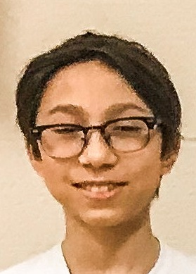

| Name | Bio |
|---|---|
|
Harrison Cazzin Youth Mentor |
Harrison is one of the youth mentors for Ctrl-Z Bayview Glen. He was on the team for 4 years prior and competed at the FIRST World Championship in St. Louis, and Detroit, and the North American Open Championship at LEGOLAND in Carlsbad, California. In FLL, Harrison has learned many life skills in addition to the robot and project, like time management and public speaking. Following his experience in FLL, he is currently involved with Holland Bloorview’s Robotics Program, where he teaches and helps other kids to build and program their own robots. Outside of FLL, he enjoys playing the piano, video games, and ultimate frisbee. |
|
Matthew Wong Youth Mentor |
Matthew is one of the youth mentors for Ctrl-Z Bayview Glen. Prior to this, he was a member of the Ctrl-Z team for 3 years. During his time on Ctrl-Z, he had the opportunity to compete in 2 FIRST Championships, one in St. Louis, and one in Detroit. He also competed in the North American Open Championship in Carlsbad, California. Being in FLL has taught Matthew to better public speak, to think critically, and to teach students more effectively, which he hopes to apply to help Ctrl-Z succeed this season. Outside of robotics, he likes to play video games, play the piano, and read. |
|

Leo Cazzin Youth Mentor |
Leo is currently one of four youth mentors for the 2022-3 FLL robotics season and is a Grade 9 student at Bayview Glen. He was a member of the Ctrl-Z robotics team for 3 years. He had the opportunity to compete in 2 FIRST World Championships in Detroit and in Houston. Being in FLL has taught Leo to manage is time, has given him more confidence in public speaking and taught him better presentation skills. Outside of robotics, Leo enjoys playing basketball, swimming, performing karate and playing the piano. |
|
Chloe Filice Youth Mentor |